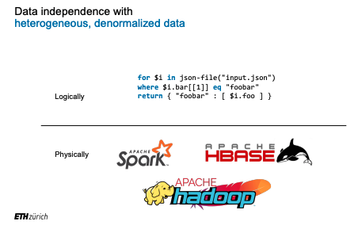
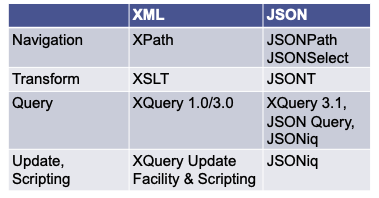
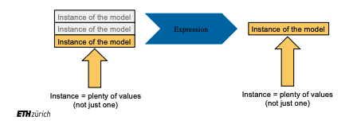

On Data Idependence - Querying Trees.
So far we introduced data objects in their tree format. We saw that
being HDFS agnostic you can save data in their tree shape - be it
JSON or XML - in HDFS. We see how it was possible to operate on
such tree data directly via the pyspark RDD low level API. Moreover,
we briefly tackled the idea of compressing the information in the tree
data model into dataframes and on how to handle these via sparkSQL
with its explode operators.
Finally, we addressed document stores, NoSQL databases that are
especially designed to deal with data in their tree shape. We saw the
extent to which document stores rely on indices and the consequent
benefit over HDFS when it comes to find indexed data as no scan over
the entire dataset has to be executed.
Given the interesting case for document store but the limited scalability the question is on whether we could leverage data independence for using a declarative language in a similar spirit of the SQL that is appositely created to deal with tree-modeled data.
This posts confronts with the above case and introduces a Jsoniq one of the many languages that are emerging in this Big Data decade to deal with tree-modeled data in a declarative way. This will allow to deal with tree-data without having to use the low-level RDD API or the approximative mapping of the tree structure into dataframes.
The Goal
As said the idea that is gaining traction in the last years is to develop a declarative language that leveraging the modular architecture of the storage and compute engines technologies is able to work and run on top of major frameworks with a unified syntax without the need for the user to understand the technologies running in the background lower in the stack.
As said many languages are currently emerging trying to deal with the issue described above. Some of them are:

They are mostly comparable to each other. We will deal in the post
with Jsoniq and Rumble a Java library that directly leverages
on Jsoniq.
Jsoniq
As said the goal was the one of finding a declarative language that would allow the user to deal with the
- nestedness
- heterogeneity
of data in their tree shape.
Jsoniq is a declarative, functional language that tries the above.
It is declarative in the sense that it abstracts the user from defining the how to achieve and manipulate the data to the low level in order to arrive at the desired result; you merely specify what you want to achieve.
It is a functional language in the sense that it manipulates instances into instances via functions. I.e. anything in the language modifies instances into instances.
Finally, it is a set-based language meaning that it acts on and returnsb collections rather than single objects.
In this sense in the Jsoniq data models, data are represented as a sequence of heterogenous and denormalized items. Denormalized in the sense that in each item in the sequence there might be nested a further sequence of items. Notice, that the case of a single data point is also modeled as a sequence of items composed by a single item. Recall that Jsoniq is a set-based language in this sense.
On top of that it is important to understand that sequences are flat so that when to object that form a sequence are concatenated to another sequence the result is a single sequence.
Jsoniq has 4 different types of items:
- atomic items - i.e scalars, strings etc. -
- objects
{} - arrays
[] - functions F (sequence of items)
Jsoniq Syntax
This section would be quite long and not too much beneficial to write. Check at the slides at the literature link. A further help should be available under the following link.